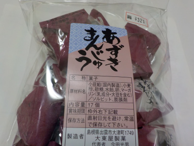
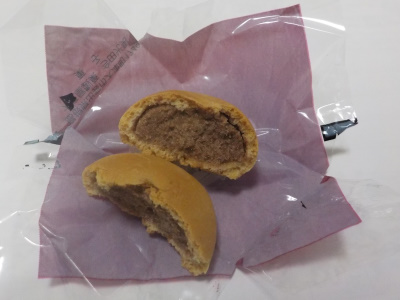

近頃の間食は大東屋製菓のあずきまんじゅうです。
2021/03/19

ちょっとお腹が空いた時や、イライラした時、甘いものが食べたくなった時にはカントリーマームを年末くらいからずっと食べていました。
美味しいですけど、飽きました。
代わりになるものを探していたらいいものがありました。
「あずきまんじゅう」です。

小さいおまんじゅうなので、気軽に糖分補給が出来ます。
和菓子は油っぽくないので軽くて食べやすいですね。今までのカントリーマームに比べると物足りない感はありますが、そのくらいの方が体や舌にはいいかなと思いました。
【大東屋製菓TOP】
【菓子TOP】
【HPTOP】